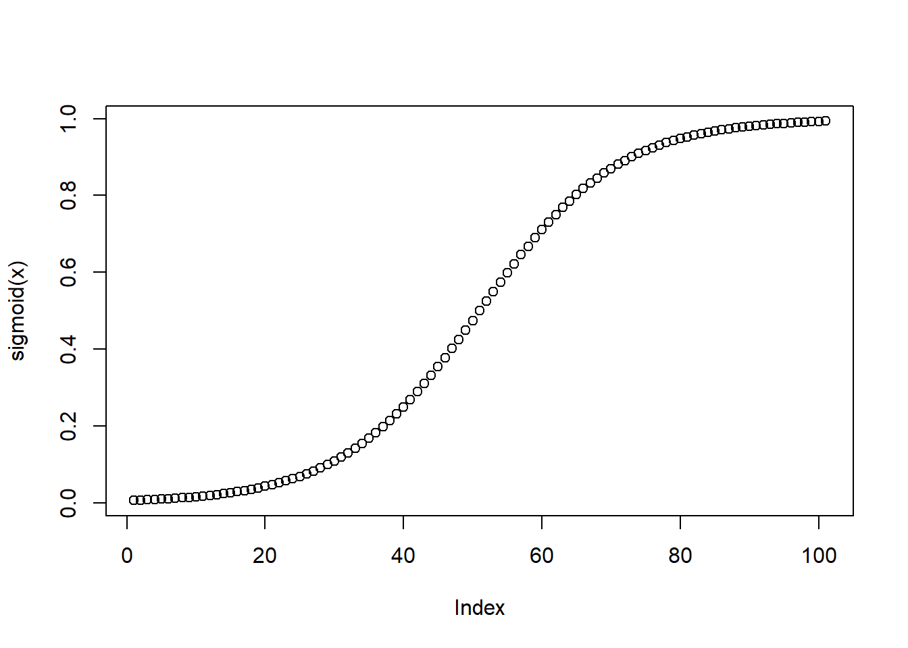
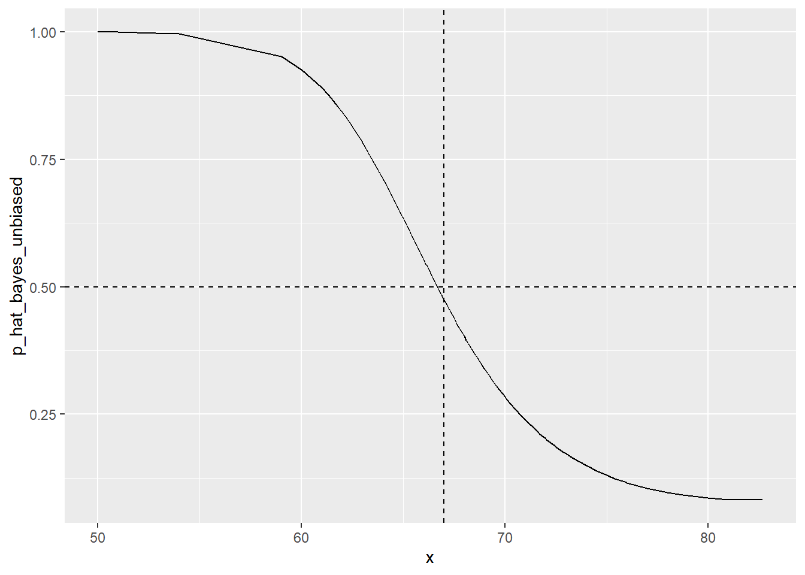
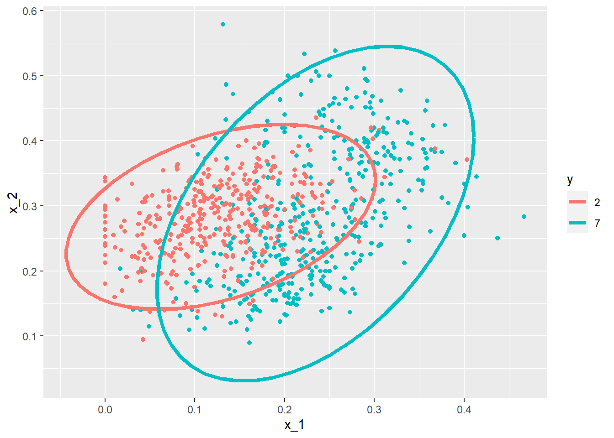
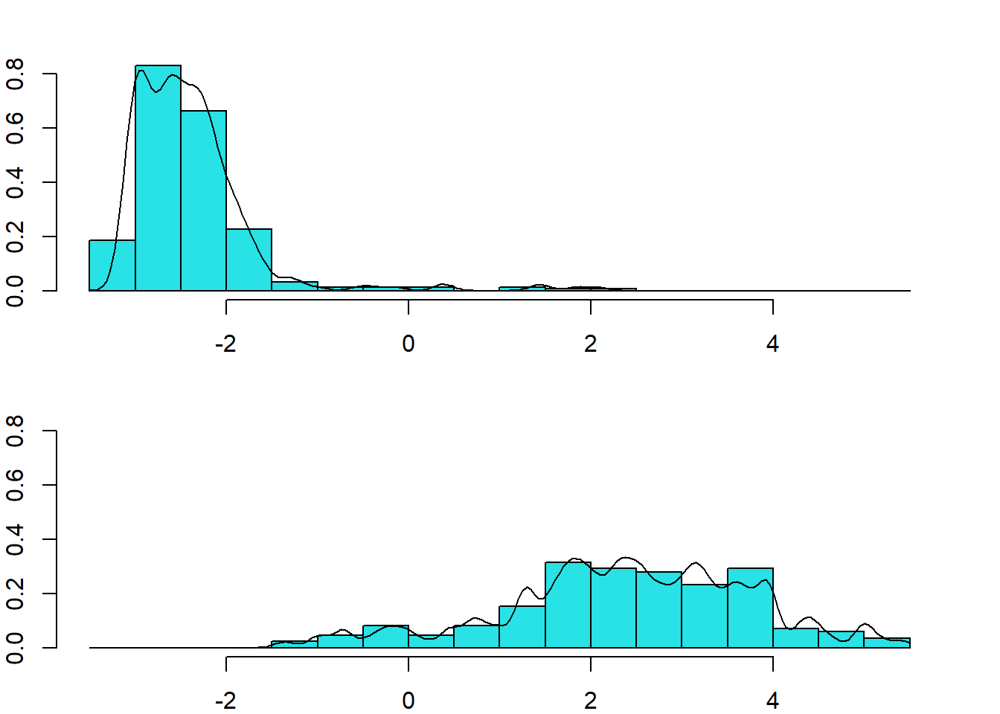

Chapter 8 linear discriminant analysis (LDA)
Predict qualitative response variables using probability-based linear models, three methods:
- Logistic regression
- Linear discriminant analysis (线性判别分析)
- Multivariate adaptive regression spline (多元自适应回归样条)
8.1 Introduction
In a binary case, the smallest true error we can achieve is determined by Bayes’ rule, which is a decision rule based on the true conditional probability:
\[ p(\mathbf{x})=\operatorname{Pr}(Y=1 \mid \mathbf{X}=\mathbf{x}) \]
We have described several approaches to estimating \(p(\mathbf{x})\). In all these approaches, we estimate the conditional probability directly and do not consider the distribution of the predictors. In machine learning, these are referred to as discriminative approaches. However, Bayes’ theorem tells us that knowing the distribution of the predictors \(\mathbf{X}\) may be useful. Methods that model the joint distribution of \(Y\) and \(\mathbf{X}\) are referred to as generative models (we model how the entire data, \(\mathbf{X}\) and \(Y\), are generated). We start by describing the most general generative model, Naive Bayes, and then proceed to describe two specific cases, quadratic discriminant analysis (QDA) and linear discriminant analysis (LDA).
8.1.1 Naive Bayes
在统计学中，朴素贝叶斯分类器是一系列简单的“概率分类器”，它们基于应用贝叶斯定理和特征之间的强（朴素）独立假设（strong (naive) independence assumptions）。它们是最简单的贝叶斯网络模型之一，但与核密度估计相结合，它们可以达到很高的准确度水平。在统计文献中，朴素贝叶斯模型有多种名称，包括简单贝叶斯和独立贝叶斯。
朴素贝叶斯是一种构建分类器的简单技术：将类标签分配给问题实例的模型，表示为特征值的向量，其中类标签是从某个有限集合中提取的。训练此类分类器的算法不是单一的，而是基于一个共同原则的一系列算法：所有朴素贝叶斯分类器都假定在给定类变量的情况下，特定特征的值独立于任何其他特征的值。例如，如果水果是红色的、圆形的、直径约 10 厘米，则可以认为它是苹果。朴素贝叶斯分类器认为这些特征中的每一个都独立地贡献于该水果是苹果的概率，而不管颜色、圆度和直径特征之间的任何可能相关性。
朴素贝叶斯的一个优点是它只需要少量的训练数据来估计分类所需的参数。尽管影响深远的独立性假设通常是不准确的，但朴素贝叶斯分类器有几个特性使其在实践中非常有用。特别是，类条件特征分布的解耦意味着每个分布都可以独立估计为一维分布。这有助于缓解因维度灾难而产生的问题，例如需要随特征数量呈指数增长的数据集。虽然朴素贝叶斯通常无法对正确的类概率产生良好的估计， 这可能不是许多应用程序的要求。例如，只要正确的类比任何其他类更有可能，朴素贝叶斯分类器就会做出正确的 MAP 决策规则分类(最大后验概率(maximum a posteriori -MAP)。 无论概率估计是否稍微不准确，甚至严重不准确，这都是正确的。通过这种方式，整个分类器可以足够健壮，可以忽略其潜在的朴素概率模型中的严重缺陷。
Recall that Bayes rule tells us that we can rewrite \(p(\mathbf{x})\) like this: \[ p(\mathbf{x})=\operatorname{Pr}(Y=1 \mid \mathbf{X}=\mathbf{x})=\frac{f_{\mathbf{X} \mid Y=1}(\mathbf{x}) \operatorname{Pr}(Y=1)}{f_{\mathbf{X} \mid Y=0}(\mathbf{x}) \operatorname{Pr}(Y=0)+f_{\mathbf{X} \mid Y=1}(\mathbf{x}) \operatorname{Pr}(Y=1)} \] with \(f_{\mathbf{X} \mid Y=1}\) and \(f_{\mathbf{X} \mid Y=0}\) representing the distribution functions of the predictor \(\mathbf{X}\) for the two classes \(Y=1\) and \(Y=0\).
The formula implies that if we can estimate these conditional distributions of the predictors, we can develop a powerful decision rule. However, this is a big if. As we go forward, we will encounter examples in which \(\mathbf{X}\) has many dimensions and we do not have much information about the distribution. In these cases, Naive Bayes will be practically impossible to implement. However, there are instances in which we have a small number of predictors (not much more than 2) and many categories in which generative models can be quite powerful.
该公式意味着，如果我们可以估计预测变量的这些条件分布，我们就可以制定一个强大的决策规则。但是，这是一个很大的如果。在我们继续前进的过程中，我们会遇到 \(\mathbf{X}\) 有很多维度并且我们没有太多关于分布的信息的例子。在这些情况下，朴素贝叶斯实际上是不可能实现的。但是，在某些情况下，我们有少量的预测变量（不超过 2 个）和许多类别，其中生成模型可能非常强大。
Good case: the example related to predicting sex from height.
在这种情况下，朴素贝叶斯方法特别合适，因为我们知道正态分布是给定性别 \(Y=1\)（女性）和 \(Y=0\)（男性）的高度条件分布的一个很好的近似值 . 这意味着我们可以通过简单地估计数据的平均值和标准偏差来近似条件分布 \(f_{X \mid Y=1}\) 和 \(f_{X \mid Y=0}\)：
library(tidyverse)
library(caret)
library(dslabs)
data("heights")
y <- heights$height
set.seed(1995)
test_index <- createDataPartition(y, times = 1, p = 0.5, list = FALSE)
train_set <- heights %>% slice(-test_index)
test_set <- heights %>% slice(test_index)
params <- train_set %>%
group_by(sex) %>%
summarize(avg = mean(height), sd = sd(height))
params## # A tibble: 2 × 3
## sex avg sd
## <fct> <dbl> <dbl>
## 1 Female 64.8 4.14
## 2 Male 69.2 3.57## prevalence, which we will denote with π=Pr(Y=1),
pi <- train_set %>% summarize(pi=mean(sex=="Female")) %>% pull(pi)
pi## [1] 0.2118321## Now we can use our estimates of average and standard deviation to get an actual rule:
x <- test_set$height
f0 <- dnorm(x, params$avg[2], params$sd[2])
f1 <- dnorm(x, params$avg[1], params$sd[1])
p_hat_bayes <- f1*pi / (f1*pi + f0*(1 - pi))
qplot(x,p_hat_bayes,xlab ="x", ylab="prob" ) 
总而言之，贝叶斯分类器特点为:
- 需要知道先验概率先验概率是计算后验概率的基础
在传统的概率理论中，先验概率可以由大量的重复实验所获得的各类样本出现的频率来近似获得，其基础是“大数定律”，这一思想称为“频率主义”。而在称为“贝叶斯主义”的数理统计学派中，他们认为时间是单向的，许多事件的发生不具有可重复性，因此先验概率只能根据对置信度的主观判定来给出，也可以说由“信仰”来确定。
- 按照获得的信息对先验概率进行修正
在没有获得任何信息的时候，如果要进行分类判别，只能依据各类存在的先验概率，将样本划分到先验概率大的一类中。而在获得了更多关于样本特征的信息后，可以依照贝叶斯公式对先验概率进行修正，得到后验概率，提高分类决策的准确性和置信度。
- 分类决策存在错误率
由于贝叶斯分类是在样本取得某特征值时对它属于各类的概率进行推测，并无法获得样本真实的类别归属情况，所以分类决策一定存在错误率，即使错误率很低，分类错误的情况也可能发生。
8.1.2 Controlling prevalence
朴素贝叶斯方法的一个有用特征是它包含一个参数来解释流行率的差异。
\[ \hat{p}(x)= \frac{\hat{f}_{X|Y=1}(x) \hat{\pi}} { \hat{f}_{X|Y=0}(x)(1-\hat{\pi}) + \hat{f}_{X|Y=1}(x)\hat{\pi} } \]
As we discussed earlier, our sample has a much lower prevalence, \(0.21\), than the general population. So if we use the rule \(\hat{p}(x)>0.5\) to predict females, our accuracy will be affected due to the low sensitivity:
y_hat_bayes <- ifelse(p_hat_bayes > 0.5, "Female", "Male")
sensitivity(data = factor(y_hat_bayes), reference = factor(test_set$sex))## [1] 0.2125984## [1] 0.9674185这主要是因为 π 远小于 0.5，因此我们倾向于更频繁地预测 Male。 机器学习算法在我们的样本中这样做是有意义的，因为我们确实有更高比例的男性。 但是，如果我们将此推断到一般人群，我们的整体准确性将受到低灵敏度的影响。
朴素贝叶斯方法为我们提供了一种直接的方法来纠正这个问题，因为我们可以简单地强制 π 成为我们想要的任何值。 因此，为了平衡特异性和敏感性，我们可以简单地将 p_hat 更改，而不是更改决策规则中的截止值，如下所示：
p_hat_bayes_unbiased <- f1 * 0.5 / (f1 * 0.5 + f0 * (1 - 0.5))
y_hat_bayes_unbiased <- ifelse(p_hat_bayes_unbiased> 0.5, "Female", "Male")
sensitivity(factor(y_hat_bayes_unbiased), factor(test_set$sex))## [1] 0.6929134## [1] 0.8320802qplot(x, p_hat_bayes_unbiased, geom = "line") +
geom_hline(yintercept = 0.5, lty = 2) +
geom_vline(xintercept = 67, lty = 2)
8.1.3 QDA
二次判别分析 (QDA) 是朴素贝叶斯的一个版本，其中我们假设分布 \(p_{\mathbf{X} \mid Y=1}(x)\) 和 \(p_{\mathbf{X} \mid Y= 0}(\mathbf{x})\) 是多元正态的。
在这种情况下，我们有两个预测变量，因此我们假设每个都是二元正态的。 这意味着我们需要估计每个案例 \(Y=1\) 和 \(Y=0\) 的两个平均值、两个标准差和一个相关性。 一旦我们有了这些，我们就可以近似分布 \(f_{X_{1}, X_{2} \mid Y=1}\) 和 \(f_{X_{1}, X_{2} \mid Y=0}\)。
data("mnist_27")
params <- mnist_27$train %>%
group_by(y) %>%
summarize(avg_1 = mean(x_1), avg_2 = mean(x_2),
sd_1= sd(x_1), sd_2 = sd(x_2),
r = cor(x_1, x_2))
params## # A tibble: 2 × 6
## y avg_1 avg_2 sd_1 sd_2 r
## <fct> <dbl> <dbl> <dbl> <dbl> <dbl>
## 1 2 0.129 0.283 0.0702 0.0578 0.401
## 2 7 0.234 0.288 0.0719 0.105 0.455### 绘制数据并使用等高线图来了解两个估计的正常密度的样子（我们显示的曲线代表一个包含 95% 点的区域）
mnist_27$train %>% mutate(y = factor(y)) %>%
ggplot(aes(x_1, x_2, fill = y, color=y)) +
geom_point(show.legend = FALSE) +
stat_ellipse(type="norm", lwd = 1.5)
### We can use the train function from the caret package to fit the model and obtain predictors:
library(caret)
train_qda <- train(y ~ ., method = "qda", data = mnist_27$train)
### We see that we obtain relatively good accuracy:
y_hat <- predict(train_qda, mnist_27$test)
confusionMatrix(y_hat, mnist_27$test$y)$overall["Accuracy"]## Accuracy
## 0.82QDA 在这里可以很好地工作，但随着预测变量数量的增加，它变得越来越难以使用。 在这里，我们有 2 个预测变量，必须计算 4 个均值、4 个 SD 和 2 个相关性。 如果我们有 10 个预测变量而不是 2 个预测变量，我们会有多少个参数？ 主要问题来自估计 10 个预测变量的相关性。 有 10 个，每个类有 45 个相关性。一旦参数的数量接近我们数据的大小，该方法就会由于过度拟合而变得不切实际。
8.1.4 LDA
A relatively simple solution to the problem of having too many parameters is to assume that the correlation structure is the same for all classes, which reduces the number of parameters we need to estimate. In this case, we would compute just one pair of standard deviations and one correlation
对于参数过多的问题，一个相对简单的解决方案是假设所有类的相关结构都相同，这样可以减少我们需要估计的参数数量。在这种情况下，我们将只计算一对标准差和一个相关性
### The accuracy for LDA, 0.629, is much worse because the model is more rigid.
train_lda <- train(y ~ ., method = "lda", data = mnist_27$train)
y_hat <- predict(train_lda, mnist_27$test)
confusionMatrix(y_hat, mnist_27$test$y)$overall["Accuracy"]## Accuracy
## 0.75### Compare with knn
train_lda <- train(y ~ ., method = "knn", data = mnist_27$train)
y_hat <- predict(train_lda, mnist_27$test)
confusionMatrix(y_hat, mnist_27$test$y)$overall["Accuracy"]## Accuracy
## 0.848.2 Discriminant analysis algorithm
判别分析又称费舍尔判别分析，也是一项常用的分类技术. 因为，分类结果很确定时，逻辑斯蒂回归的估计结果可能是不稳定的， 即置信区间很宽，不同样本之间的估计值会有很大变化. 判别分析 不会受到这个问题的困扰，泛化能力更强。 反之，如果特征 和结果变量之间具有错综复杂的关系，判别分析在分类任务上的表现就会非常差。
判别分析使用贝叶斯定理确定每个观测属于某个类别的概率。 如果你有两个类别，比如良性和恶性， 判别分析会计算观测分别属于两个类别的概率，然后选择高概率的类别作为正确的类别。 贝叶斯定理定义了在X已经发生的条件下Y发生的概率——等于Y和X同时发生的概率除以X 发生的概率
\[P(X|Y)=P(X+Y)/P(X)\]
同样地，分类原则认为如果X和Y的联合分布已知， 那么给定X后，决定观测属于哪个类别的最佳决策是选择那个有更大概率(后验概率)的类别
获得后验概率的过程如下所示。
- 收集已知类别的数据。
- 计算先验概率——代表属于某个类别的样本的比例。
- 按类别计算每个特征的均值。
- 计算每个特征的方差-协方差矩阵。在线性判别分析中，这会是一个所有类别的混合矩阵， 给出线性分类器;在二次判别分析中，会对每个分类建立一个方差协方差矩阵。
- 估计每个分类的正态分布(高斯密度)。
- 计算discriminant函数，作为一个新对象的分类原则。
- 根据discriminant函数，将观测分配到某个分类。
第k个分类的先验概率: \(\pi_k=\)分类k中的样本数/总体样本数, 一个观测属于第k个分类的概率密度函数。假设概率服从正态分布(高斯分布)。如果有多个特征，假设概率服从多元高斯分布\[f_k(X)=P(X=x|Y=k)\]
给定一个观测的特征值时，这个观测属于第k个分类的后验概率:
\[ P_x(X)=-\frac{\pi_kf_k(X)}{\sum_{l=1}^k\pi_lf_l(X)} \]
判别分析会生成k-1个决策边界，也就是说，如果有三个类别(k = 3)，那么就会有两个决策边界。 当k=2时，生成1个决策边界： z.B，当\[\pi_1=\pi_2\]时，if \[2x(\mu_1-\mu_2)\gt\mu_1^2-\mu_2^2\], 观测值被分配到第3个分类中，否则就被分配到第二个分类
8.2.1 Idee
LDA是一种监督学习的降维技术，也就是说它的数据集的每个样本是有类别输出的。这点和PCA不同。PCA是不考虑样本类别输出的无监督降维技术。DA的思想可以用一句话概括，就是“投影后类内方差最小，类间方差最大”。——- 将数据在低维度上进行投影，投影后希望每一种类别数据的投影点尽可能的接近，而不同类别的数据的类别中心之间的距离尽可能的大。
8.2.2 瑞利商（Rayleigh quotient）
瑞利商是指这样的函数 \(R(A,x)\)
\[ R(A,x) = \frac{x^HAx}{x^Hx} \]
其中 \(x\) 为非零向量, 而A$为 \(n \times n\) 的Hermitan矩阵。所谓的Hermitan矩阵就是满足共轩转置矩阵和自己相等的矩阵, 即 \(A^{H}=A_{\circ}\) 如果我们的矩阵A 是实矩阵, 则满足 \(A^{T}=A\) 的矩阵即为Hermitan矩阵。
瑞利商 \(R(A, x)\)有一个非常重要的性质, 即它的最大值等于矩阵 \(A\) 最大的特征值, 而最小值等于矩阵 \(A\) 的最小的特征值, 也就是满足
\[ \lambda_{\min } \leq \frac{x^{H} A x}{x^{H} x} \leq \lambda_{\max } \]
当向量\(x\)是标准正交基时, 即满足 \(x^{H} x=1\) 时, 瑞利商退化为: \(R(A, x)=x^{H} A x\)
8.2.3 广义瑞利商 genralized Rayleigh quotient
广义瑞利商是指这样的函数 \(R(A,B,x)\);
\[ R(A,x) = \frac{x^HAx}{x^HBx} \]
通过将其通过标准化就可以转化为瑞利商的格式。令 \(x=B^{-1/2}x'\), 则分母转化为：
\[ x^HBx = x'^H(B^{-1/2})^HBB^{-1/2}x' = x'^HB^{-1/2}BB^{-1/2}x' = x'^Hx' \]
而分子转化为
\[ x^HAx = x'^HB^{-1/2}AB^{-1/2}x' \]
此时
\[ R(A,B,x') = \frac{x'^HB^{-1/2}AB^{-1/2}x'}{x'^Hx'} \]
利用前面的瑞利商的性质， \(R(A,B,x')\)的最大值为矩阵 \(B^{-1/2}AB^{-1/2}\) 的最大特征值，或者说矩阵 \(B^{-1}A\) 的最大特征值，而最小值为矩阵 \(B^{-1}A\) 的最小特征值。
8.2.4 LDA算法流程
输入：数据集 \[D=\left\{\left(x_{1}, y_{1}\right),\left(x_{2}, y_{2}\right), \ldots,\left(\left(x_{m}, y_{m}\right)\right)\right\}\],其中任意样本 \(x_{i}\) 为n维向量, \(y_{i} \in\left\{C_{1}, C_{2}, \ldots, C_{k}\right\},\) 降维到的维度\(d\)。 输出：降维后的样本集\(D'\);
- 计算类内散度矩阵 \(S_{w}\);
- 计算类间散度矩阵 \(S_{b}\)
- 计算矩阵 \(S_{w}^{-1} S_{b}\)
- 计算 \(S_{w}^{-1} S_{b}\) 的最大的\(d\)个特征值和对应的\(d\)个特征向量 \(\left(w_{1}, w_{2}, \ldots w_{d}\right),\) 得到投影矩阵\(W^{T}\);
- 对样本集中的每一个样本特征 \(x_{i}\),转化为新的样本 \(z_{i}=W^{T} x_{i}\)
- 得到输出样本集 \(D^{\prime}=\left\{\left(z_{1}, y_{1}\right),\left(z_{2}, y_{2}\right), \ldots,\left(\left(z_{m}, y_{m}\right)\right)\right\}\)
8.2.5 LDA Application
线性判别分析假设每种类别中的观测 服从多元正态分布，并且不同类别之间的具有同样的协方差。 二次判别分析仍然假设观测服从正 态分布，但假设每种类别都有自己的协方差。线性判别分析(LDA)可以用MASS包实现
## Data Preparation
library(MASS)
data(biopsy)
biopsy$ID = NULL
names(biopsy) = c("thick", "u.size", "u.shape", "adhsn",
"s.size", "nucl", "chrom", "n.nuc", "mit", "class")
biopsy.v2 <- na.omit(biopsy)
## 为了满 足这个要求，可以创建一个变量y，用0表示良性，用1表示恶性
## 使用ifelse()函数为y赋 值，如下所示:
y <- ifelse(biopsy.v2$class == "malignant", 1, 0)
set.seed(123) #random number generator
ind <- sample(2, nrow(biopsy.v2), replace = TRUE, prob = c(0.7, 0.3))
train <- biopsy.v2[ind==1, ] #the training data set
test <- biopsy.v2[ind==2, ] #the test data set
trainY <- y[ind==1]
testY <- y[ind==2]
lda.fit <- lda(class ~ ., data = train)
lda.fit## Call:
## lda(class ~ ., data = train)
##
## Prior probabilities of groups:
## benign malignant
## 0.6371308 0.3628692
##
## Group means:
## thick u.size u.shape adhsn s.size nucl chrom
## benign 2.92053 1.304636 1.413907 1.324503 2.115894 1.397351 2.082781
## malignant 7.19186 6.697674 6.686047 5.668605 5.500000 7.674419 5.959302
## n.nuc mit
## benign 1.225166 1.092715
## malignant 5.906977 2.639535
##
## Coefficients of linear discriminants:
## LD1
## thick 0.19557291
## u.size 0.10555201
## u.shape 0.06327200
## adhsn 0.04752757
## s.size 0.10678521
## nucl 0.26196145
## chrom 0.08102965
## n.nuc 0.11691054
## mit -0.01665454## 在分组先验概率中，良性概率大约为64%，恶性概率大约为36%
## 线性判别系数是标准线性组合，用来确定观 测的判别评分的特征。评分越高，越可能被分入恶性组
## 画出判别评分的直方图和密度图
## 组间有些重合，这表明有些观测被错误分类
par(mar=c(2,2,2,2))
plot(lda.fit, type="both")
## null device
## 1## 在训练集上表现
## LDA模型可以用predict()函数得到3种元素(class、posterior和x)的列表。
## class元素是对 良性或恶性的预测，posterior是值为x的评分可能属于某个类别的概率
## x是线性判别评分, 仅提取恶性观测的概率
library(InformationValue)
train.lda.probs <- predict(lda.fit)$posterior[, 2]
misClassError(trainY, train.lda.probs)## [1] 0.0401## 0 1
## 0 296 13
## 1 6 159## 在测试集上的表现
test.lda.probs <- predict(lda.fit, newdata = test)$posterior[, 2]
misClassError(testY, test.lda.probs)## [1] 0.0383## 0 1
## 0 140 6
## 1 2 618.2.6 QDA
## Call:
## qda(class ~ ., data = train)
##
## Prior probabilities of groups:
## benign malignant
## 0.6371308 0.3628692
##
## Group means:
## thick u.size u.shape adhsn s.size nucl chrom
## benign 2.92053 1.304636 1.413907 1.324503 2.115894 1.397351 2.082781
## malignant 7.19186 6.697674 6.686047 5.668605 5.500000 7.674419 5.959302
## n.nuc mit
## benign 1.225166 1.092715
## malignant 5.906977 2.639535## 结果中有分组均值，和LDA一样;但是没有系数，因为这是二次函数
train.qda.probs <- predict(qda.fit)$posterior[, 2]
misClassError(trainY, train.qda.probs)## [1] 0.0422## 0 1
## 0 287 5
## 1 15 167test.qda.probs <- predict(qda.fit, newdata = test)$posterior[, 2]
misClassError(testY, test.qda.probs)## [1] 0.0526## 0 1
## 0 132 1
## 1 10 66